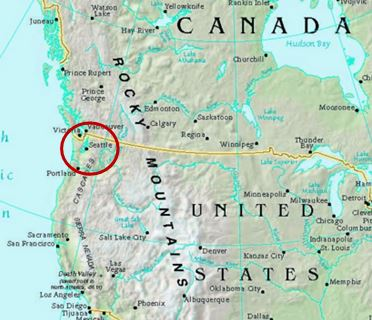

Tools Used
- Financial Incentives and Disincentives
- Norm Appeals
- Obtaining a Commitment
- Overcoming Specific Barriers
- Prompts
- Mass Media
Initiated By
Seattle Public Utilities and King County
Partners
- PRR
- The Frause Group
- Brumley Communications
Results
Periodic polling between 1997 and 2001 shows almost double the amount of households are now leaving their grass clippings on their lawns, have ceased to use pesticide-containing products and are no longer watering their lawns.
Bert the Salmon: Promoting Natural Lawn Care in the Seattle Area
An extremely successful, media-based public relations campaign has convinced hundreds of thousands of Seattle-area homeowners to turn their backs on many environmentally harmful lawn care practices and embrace elements of natural lawn care. The campaign also uses a habit change kit that includes a lawn sign.
Background
In the mid-1990s, residents, businesses and government in King County (which includes Puget Sound and the Seattle area, in Washington State, USA) used about 1.1 million pounds of pesticides a year. Meanwhile, the areas 1.1 million homeowners generated nearly 550,000 tons of grass clippings. The pesticides had a negative impact on water quality, stream health and therefore wildlife habitat, while the grass clippings threatened to push the local composting facility beyond capacity. Furthermore, homeowners used almost twice the amount of water during summer as they did in winter, which threatened to strain the regions water supply. Much of this summer water consumption was for lawn watering and other outdoor use.
In 1996 a consortium of public agencies led by Seattle Public Utilities and King County hired PRR, The Frause Group and Brumley Communications to devise and implement a program that would convince as many homeowners in the area as possible to adopt natural lawn care (NLC).
Map courtesy of Mapcruzin.com
Setting Objectives
The programs overall goal was to change the northwest lawn care ethic so that homeowners would move towards environmental best practices for lawn care. The specific behaviour changes it hoped to achieve were the following:
- to increase the number of people who practice grasscycling
- to decrease the number of people who use weed-n-feed products on their lawns
- to decrease the amount of water used on lawns
No specific targets were set for the objectives.
Getting Informed
The program found its target audience through a poll of 400 Seattle area residents. The poll determined that male homeowners from 25 to 54 years of age with a household income of $30,000 or more were most likely to own a lawn that they cared for themselves. Subsequent focus group research showed that while the group was interested in behaving in a responsible way, most were not receptive to learning complex lawn care techniques.
"We learned that we had to keep the message as simple as possible", said Julie Colehour, Director of Marketing at PRR. "Also, the focus groups showed us that the target audience was more receptive and learned better through an upbeat message rather than a doom and gloom message."
Delivering the Program
The team developed a simple message for the campaign that it could adapt to use in all media and at all events. The slogan was: When it comes to your lawn, act naturally. To reinforce the slogan, the team developed a friendly character called Bert the Salmon to act as spokesfish and deliver the NLC message in a humourous way.
According to Colehour, Bert was not your typical salmon. He was developed to appeal to the male target audience in terms of look, style and tone, she said. He wears a baseball cap and jacket and has a sense of humor. The fact that he is a salmon sends an underlying message of why NLC is important.
In the course of its research, the communications team determined that an integrated community outreach approach was the best method to reach the target audience. It recognized that NLC was a difficult concept for communities to grasp and, therefore, reopted for a grassroots approach. The promotional campaign included the following activities:
- television and radio advertising during Seattle Mariners baseball games
- media relations and promotional events at which news media would be present
- support materials, including habit change kits, lawn care information brochures and a promotional video
- education at special events such as the Garden Show and Home Show. This included distribution of literature and one-on-one education to interested parties.
Advertising
The cornerstone of the campaign was television advertising aired during Seattle Mariners baseball games (Mass Media). Because the target audience was men, the communication steam reasoned that baseball was an excellent venue for getting its message across. A 30-second ad, which cost $25,000 to produce, was aired in 1998 and 2000. The group spent $260,000 in 1998 and $230,000 in 2000 to air the ads.
The two years where we aired the ads on Mariners TV were the two years where we saw the biggest behavior changes, said Colehour. While polling showed continuous improvement in all three behaviour areas over the four years of the campaign, the largest movements happened during the two years where we used Mariners TV advertising.
In 1997 and 1999 the program also advertised NLC during Mariners radio baseball games. It rotated radio spots over nine weeks from April through August, which coincided with the growing season. Ads that focused on grasscycling predominated in April and June. From June to August, the irrigation season in Seattle the program aired ads aimed at water conservation. In 1999, the program again focused on radio advertising. That year the communications team worked with Mariners to produce 19 NLC tips that it broadcast during the games. During the 15-second tips, Bert the Salmon interacted with a Mariners team member. The advertising cost $210,000 in 1997, and $128,000 in 1999.
Engaging the news media
Engaging the news media effectively was another critical aspect of the NLC campaign (Mass Media). We held many media events and got lots of news coverage, said Colehour. Because we used various vehicles to disseminate information, people heard the message several times.
Each year the communications team developed a different media hook to get the public interested.
- In 1997, the team invited the media to the home of a resident who practiced NLC. The media talked with the resident about NLC and showed the result - a great looking lawn. Public officials were on hand to discuss the program with reporters.
- In 1998 a junior high school student wrote to Seattle Mayor Paul Schell to complain he was afraid for his pets because of pesticide spraying in his neighborhood. Several local newspapers published his letter, which led to a community forum at the teens home. Schell conducted the event and the news media showed up in droves. Every local television station covered the forum and the two leading Seattle newspapers ran front-page feature articles. Community newspapers gave the event extensive coverage and radio stations conducted several interviews. The communications team considered the event one of its most successful public relations events.
- In 1999, the team issued a press release about how an increase in diazinon pesticide use during August and September could harm birds and fish, including the Chinook Salmon. It also pointed out that adult crane flies cannot be controlled with diazinon pesticides. The press release, which got extensive media coverage, asked people to embrace NLC as an alternative. In a second media push that year the communications team recruited all Seattle public libraries to stop using pesticides on their grounds. Mayor Schell announced the change at a library media event and asked citizens to adopt the same practices at home.
- In 2000 the team recruited an entire neighborhood in Renton Hill to dispense with lawn chemicals and embrace grass mulching for the season. The group offered each of the 19 households a free Black and Decker electric mulching lawn mower (Black and Decker donated the mowers to the communication steam), free lawn care consultations and free environmentally friendly lawn care products such as organic fertilizers (Financial Incentives; Overcoming Specific Barriers). In return, the team asked residents to pull weeds by hand, water their lawns sparingly instead of daily and to dispose of all their chemical pesticides for six months (Obtaining a Commitment). The team invited the media to the program launch.
The Renton Hill event was very successful, said Colehour. We had shots of little old ladies wheeling their gas mowers away and people using wheelbarrows to get rid of their pesticides. The media attention we got was very helpful in publicizing NLC. At the end of the summer all but two of the Renton Hill neighbors said they would continue to use NLC. The communications team asked the media back to discuss the experience with residents. Both media events gave substantial coverage to the program and many nearby neighbors asked how they could participate.
What we hope is that with all the media and other exposure the peer pressure to have a perfect lawn will start working the other way around, said Colehour. We want people to feel the pressure to stop using pesticides and to embrace NLC.
Support Materials
Before the campaign's 1997 launch, the communications team developed a basic brochure on how to practice NLC. It distributed the brochure at various seminars and events such as the Home Show, the Garden Show and neighborhood meetings. It also distributed through Seattle Public Utilities, King County and through its toll-free phoneline (Mass Media). The brochure featured Bert the Salmon on virtually every page and listed six steps to using NLC (Overcoming Specific Barriers):
- Mow high, mow often and leave the clippings.
- Fertilize moderately in May and September with natural organic or slow release fertilizer.
- Water deeply to moisten the root zone, but infrequently.
- Improve poor lawns with aeration and over-seeding. Consider fixing the soiland replanting.
- Think twice before using weed n feed or other pesticides.
- Consider alternatives to lawns for steep slopes, shady areas, or near streams and lakes.
In 1999 the communications team identified the need to support the excellent media coverage of NLC with a package of specific instructions about how to get started. To do this it developed a habit change kit that included the NLC brochure and other pamphlets loaded with practical information on how to use alternative pesticides, how to water lawns effectively and minimally and how to care for lawns without pesticides or excessive water use. The kit also included a Bert the Salmon lawn sign so people could show their neighbors they practiced NLC (Norm Appeals). The team distributed the kits at special events and through the NLC hotline.
The program used utility bill inserts to disseminate its message. These inserts focused primarily on water conservation and the impact of excessive water use on lakes and streams and, therefore, on salmon. Over the course of the program, Seattle Public Utilities distributed hundreds of thousands of inserts to its customers (Mass Media;Prompts).
The group produced a nine-and-a-half minute video for use during NLC speaker presentations at community centres, and for free distribution to every customer who purchased a mulching lawn mower through a mulch mower rebate program. In addition, it was provided to interested neighborhood groups and streamed free of charge on the King County Web site and the King County Department of Natural Resources Web page. It cost $24,000 to produce.
The reason the campaign worked so well was that we used an integrated approach, said Colehour.
Financing the Program
| Campaign Mix | 1997 | 1998 | 1999 | 2000 |
| Strategy/Planning | $8,544 | $5,190 | $25,061 | $10,000 |
| Creative development and production of ads, flyers, etc. |
$70,800 | $44,668 | $28,000 | $40,000 |
| PR/Outreach | $17,751 | $28,005 | $41,000 | $40,000 |
| Media planning and purchase (buying air time) |
$210,542 | $260,000 | $128,000 | $236,000 |
| Creative testing (focus groups) |
0 | $11,405 | 0 | 0 |
| Neighborhood meetings | 0 | 0 | $45,000 | $10,000 |
| Habit change kit | 0 | 0 | $20,500 | $5,000 |
| Targeted population outreach (including promotional video) |
0 | 0 | $29,500 | 0 |
| Grasscycling education (participation at mulch mower sales events) |
0 | 0 | $3,000 | $3,000 |
| Evaluation (polling) | $5,992 | $14,077 | $33,000 | $10,000 |
| Project management | 0 | $4,543 | $12,088 | $6,000 |
| TOTAL | $313,629 | $367,888 | $365,149 | $360,000 |
Measuring Achievements
Over the four years of the campaign, the communications team conducted eight consumer polls one before the summer season and one in the fall - in which it asked 400 residents about each of the three behaviours the communications team was trying to change. Frequent polling made it possible to assess the effects of each stage of the promotion strategy.
Results
Between 1997 and 2001, periodic polling has documented the following behaviour changes.
- The percentage of the population that leave their grass clippings on their lawns most of the time has increased from 27.7 per cent to 41 per cent (146,300households).
- The percentage of the population that does not use weed-n-feed or a similar pesticide-containing product on their lawns has increased from 46.8 per cent to 60 per cent (145,200 households).
- The percentage of the population that does not water their lawns has increased from 18.4 per cent to 34 per cent (171,600 households).
Contacts
Julie Colehour
Colehour+Cohen
1417 Fourth Avenue, Suite 201
Seattle, Washington 98101
Tel: (206) 262-0364
E-mail: jcolehour@colehourcohen.com
Web site: www.colehourcohen.com
Notes
In March 2002, Go for Green, in partnership with Environment Canada, Home Depot and Tools of Change, hosted a Forum on Public Education Strategies to encourage "Gardening for Life" in Toronto to develop an educational model on sustainable lawn and garden practices for homeowners. The result was the release of a Gardening for Life blueprint and the "Bert the Salmon" case study, providing municipalities with much needed strategies on how to encourage citizens to become more physically active in lawn and garden care by using non-motorized tools and pesticide-free approaches.
Click here to view the Gardening for Life blueprint and related papers.
Last updated: July 2004
Written in 2002 by Jay Kassirer